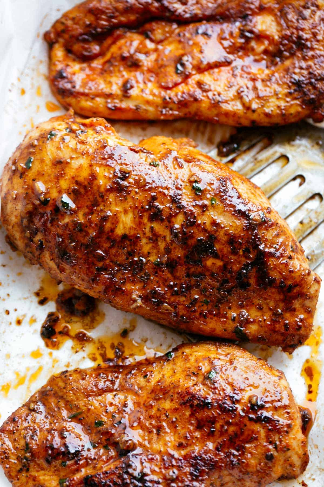

Baked Chicken Breasts

Description
The following recipe is for oven baked chicken breasts
Ingredients
- Chicken Breasts
- Olive Oil
- Salt
- Creole Seasoning
- Chicken Broth
Steps
- Coat the chicken breasts with olive oil, then sprinkle both sides with salt and Creole seasoning.
- Place the seasoned chicken in a broiler pan. Bake in an oven for about 10 minutes, then flip and continue
to bake for about 15 more minutes (or until the juices run clear). When the chicken is done baking, transfer it to a plate.
- Pour the chicken broth into the pan you used to bake the chicken. Scrape any browned bits off the side with a spatula.
Drizzle the pan sauce over the baked chicken before serving.